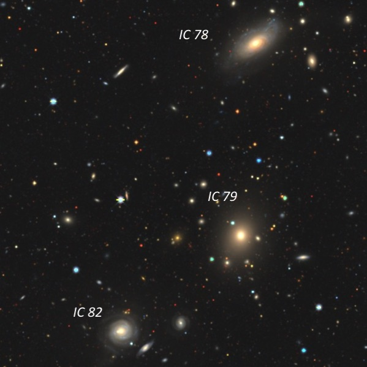
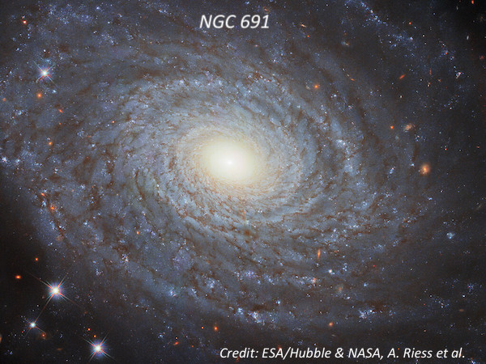
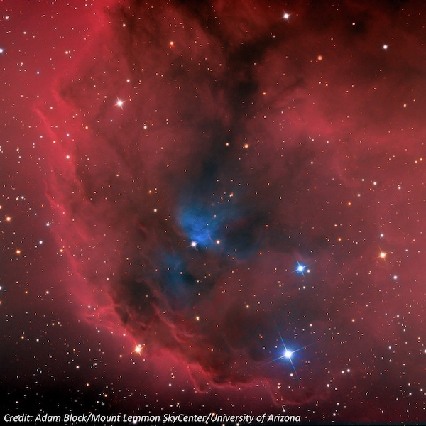
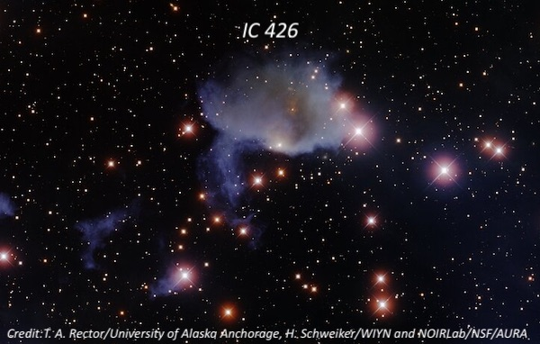

Fiddletown Observatory on Nov. 22, 2003
We had a clear, cold night at the Fiddletown observatory on Saturday, November 22, after the forecast had called for clouds. We had a good turnout with about 8 observers. Seeing and transparency were very nice and the lack of a breeze kept the low temperature quite tolerable. I had no problems using 257× (8.8mm Meade Ultrawide) and occasionally 300× with a 7.5mm eyepiece, though that was about it in these conditions.
In addition to some of the objects described here, I also viewed three comets: 2P/Encke (mag 8.1), C/2001 HT50 (LINEAR-NEAT) (mag 8.4) and C/2002 T7 (LINEAR) (mag 9.4), and from about 6:30 to 11:30 (5+ hours) I logged a total of 33 objects.
Abell 151 (or AGC 151) is a galaxy cluster in Cetus – also known as Haufen A. Interestingly, it appears to consist of three different clusters at different redshifts that are along the same line of sight. The closest is at z = .041 and it includes four IC galaxies. Then there is a group at z = .054 (often given as the redshift of the cluster) and a background cluster at z = .10. I viewed these galaxies at 257× with my 18-inch f/4.3 Starmaster.
Abell 151
01 08 52.3 -15 25 01
Size: 72΄
IC 78: Faint, moderately large, fairly low surface brightness with weak concentration. Initially just a 40" core was noticed but with extended viewing larger extensions increased the total size to ~1.2' × 0.6'.
IC 79: Faint, small, slightly elongated, 25" × 20". A mag 14 star is just off the NNE edge, 30" from center.
IC 80: Faint, elongated 3:2 SW-NE, 40" × 25", low even surface brightness. This is a double system [nuclei separated by 11"] that was not resolved.
IC 82: Very faint, small, round, 0.4' diameter, low surface brightness.

The NGC 691 group is a collection of several NGC and IC galaxies that are gravitationally bound. They lie about 115-120 million light-years from Earth.
NGC 691
01 50 41.7 +21 45 35
Size: 3.5' × 2.6', Magnitude: 11.4V
The eponymous member of the NGC 691 group appears bright, large, slightly elongated E-W, ~2.0' × 1.5'. Fairly sharp concentration with a well-defined 45" core surrounded by an unconcentrated halo. A close pair of mag 9-10 stars (uncatalogued) is just off the northeast edge!

NGC 678: Fairly bright, moderately large, very elongated 7:2 WSW-ENE, 3.0' × 0.8'. Sharply concentrated with a small bright core that increases to the center. The extensions are much fainter.
NGC 680: Fairly bright, high surface brightness elliptical or lenticular, slightly elongated, 1.7' × 1.5'. Contains a well-condensed 30" bright core surrounded by a fainter halo that fades gradually. Surrounded by three mag 10-11 stars.
IC 1730: Very faint, extremely small, round, 10" diameter.
NGC 694: Moderately bright, fairly small, 0.7'x0.5'. NGC 694 has a fairly high surface brightness, which increases to an occasional faint stellar nucleus. A mag 10.5 star is 2.3' southeast.
IC 167: Very faint, elongated 4:3, 0.8'x0.6', low surface brightness.
NGC 697: Fairly bright, very elongated 5:2 WNW-ESE, ~3.0'x1.3'. Contains a fairly well-defined bright elongated core and a pretty smooth halo.
The next three galaxies are in the same low power field as Algol, so I used 260×, which kept Algol well outside the field.
NGC 1212
03 09 42.2 +40 53 35
Size: 0.9' × 0.5', Magnitude: 14.5V
Faint, small, round, 25" diameter, even surface brightness. Forms the SW vertex of an equilateral triangle with mag 8.7 SAO 38614 2.7' NE and a mag 11.7 star 2.2' E.
IC 290: Very faint, very small, appears as a tiny elongated streak, ~25" × 8". Located 5' north of IC 1883 (= NGC 1212) and 2.8' NNW of mag 8.7 SAO 38614 at the west side of AGC 426.
IC 292: Faint, fairly small, elongated 2:1 WSW-ENE, 0.9' ×0.4', very weak concentration. Located 2.4' S of a mag 10 star at the west edge of AGC 426.
E. E. Barnard discovered Cederblad 51 (Ced 51), a weak nebulosity on the north side of 11th-magnitude HK Orionis. This million-year-old star is a pre-main-sequence Herbig Ae/Be binary, still encased in a dusty, embryonic accretion disk.
On wide-field images, HK Orionis sits along the north side of the Lambda Orionis Molecular Ring, also known as Sh 2-264. Within this immense star-forming region are young Herbig-Haro objects, T Tauri stars, pre-brown dwarf candidates, and several dark nebulae. Through my 18-inch scope, I logged Cederblad 51 as a 4′ wide, diffuse patch just north of the star.
Ced 51
05 31 28 +12 10 00
Size: 4'

IC 426
05 36 31 -00 17 54
Size: 5'x5'
This object is a surprisingly large reflection nebula just following a mag 8.6 star. It appears ~7'x5' in diameter and oval E-W, though the outline is ragged. There are a number of brighter stars nearby and the nebula is situated northeast of a distinctive N-S chain of 5 stars mag 8.6-10. A distinct border runs E-W just following the mag 8.6 star. An OIII filter killed the nebula, though I didn't try either a UHC or H-beta filter. Located 1° NNE of Alnilam (middle star in Orion's belt).
